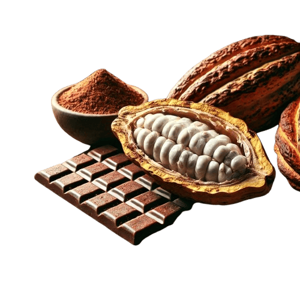

Explora el sabor del chocolate como nunca antes
Sumérgete en un mundo de sabores únicos con nuestros chocolates artesanales, creados cuidadosamente para deleitar tus sentidos. Cada bocado es una experiencia inolvidable, hecha con los mejores ingredientes y una pasión inigualable por la calidad
